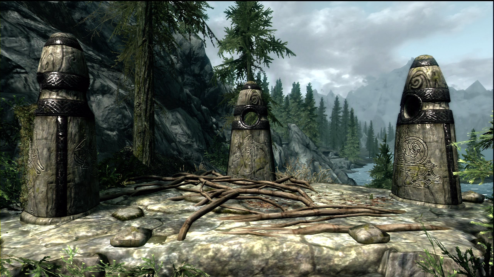

The Elder Scrolls V: Skyrim Guide
General Tips
The dangers of Skyrim are plentiful and therefore the most valuable tip would be to save often. Plenty of times one makes it to the final boss of the dungeon to only get killed and have to start over from the moment the player entered that specific part of the dungeon. Most importantly, save before major encounters. For example if the player knows a dragon priest fight approaches then they are able to save before the fight. If the player does indeed die then they are then able to use their knowledge of what is ahead to plan and strategize, and something good can come out of it! And there is always the added bonus of not having to retrace your steps. Also, enemies will drop different loot to what you may have picked up previously when retracing from a saved checkpoint. Another great time to save is right before a master or expert lock, that way if you lose all lock picks or most of them you can reload and try again. Also don’t forget to save over old saves that are now useless.
While it can be incredibly enticing to "cheese" your levels by crafting hundreds of iron daggers or using similar methods to easily level up certain skills - keep in mind that enemies will be scaling to your level all the time. That means if you level up 5 times and only put points into more non-combative skills, your enemies will prove to be even tougher.
Always vary your level ups between both combative and non-combative skills so that you'll be ready to any challenge down the road.
While adventuring throughout the world, collect as many items as you can. Most of the items in Skyrim are used for something. For example; the pelt with which is turned into leather or the Dwemer scrap metal which can be transformed into ingots. All of the items you pick up could help you level up skills you are interested in. An example of this is using the leather from a bear pelt to craft items to increase smithing. Another reason to pick up as many items as possible is quests, as often times they task you with getting items you might not have. This is optional as maybe you would like to go outside and retrieve it the adventurous way.
When gathering ingredients for potion making, be sure to experiment with them to find out their properties, and you'll often find some great potions to make through the ingredients you test.
Be aware, though, that carrying too much could slow you down.
Volumes and volumes of books are strewn throughout Skyrim. Most of them provide a lot of exposition on the history and Elder Scrolls lore, but some of them also happen to be Skill Books or give you Quests. It's worth at least thumbing through the pages to discover whether they're of use to you in-game. Or you know... you can actually read them (crazy, right?).
An easy way to determine if a random book you find in Skyrim is a Skill Book at a glance is to take note of the book's value when your crosshairs are pointed at it. Skill Books will generally have values greater than 50 gold.
TIP: Since leveling up your skills is quick at first and takes longer the higher the skill level you've attained, its a good rule of thumb to not read any books until your skills are higher, making it easier attain skills later in the game.

You most likely came across the three base guardian stones when you started on your journey; remember them, as they are your friends. Say you are bored of bludgeoning draugr with your war hammer and you would rather turn them into ashes. Pay a quick visit to the guardian stones to be blessed by the mage stone to accelerate your development with magic. Take advantage of the Stones and switch according to your playstyle.
Credtis go to: IGN.